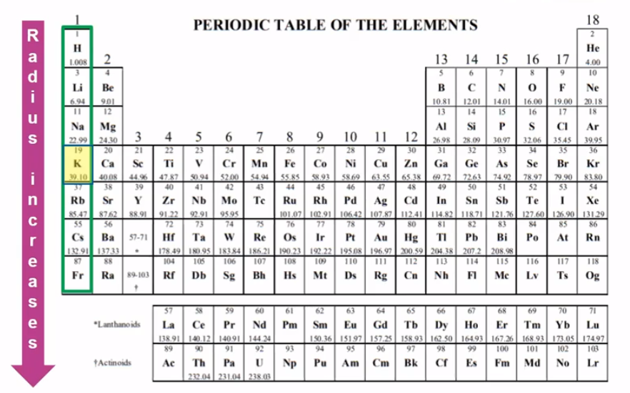
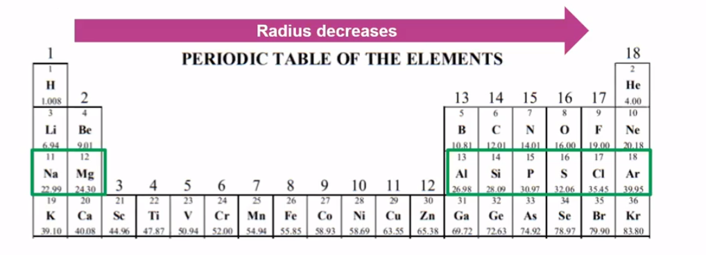
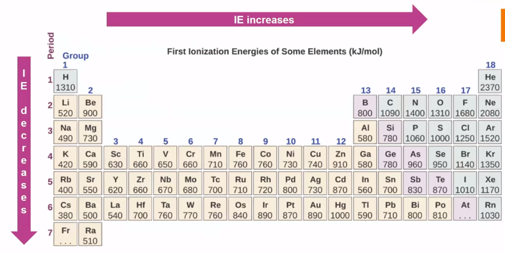
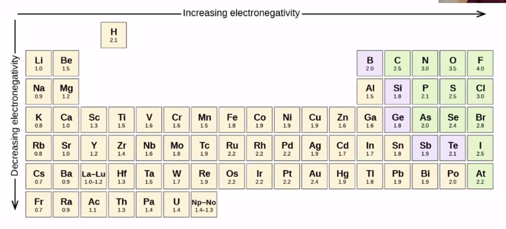
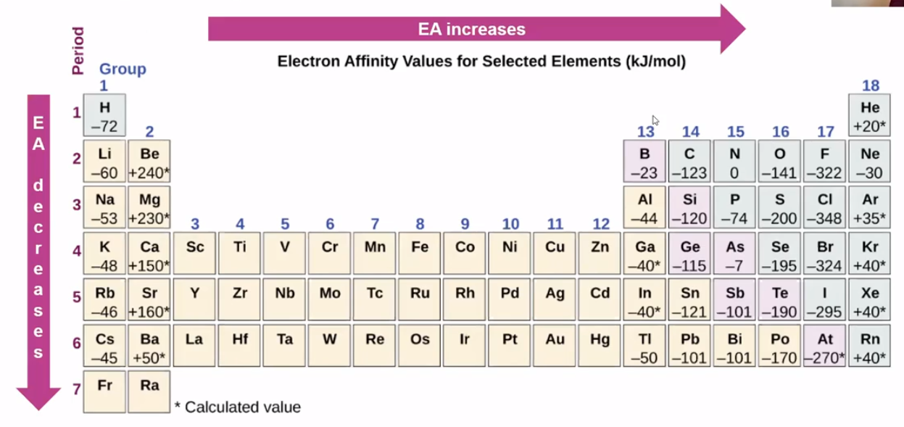

Three rules
Electrons are attracted to the protons in the nucleus of an atom
Electrons are repelled by other electrons in an atom
Completed shells are very stable and desirable
Atomic Radii
Cations are smaller than atoms
Anions are larger than atoms
Measured in pM
More shells = larger
More valence electrons = smaller (valence electrons are held more tightly to nucleus because more protons)
{width="6.125in" height="3.8229166666666665in"}
{width="6.208333333333333in" height="2.2395833333333335in"}
Ionization Energy
Energy required to remove an electron from an atom
Tied to atomic radius
Larger atomic radii =>
Weaker attraction between valence electrons and nucleus, therefore
Smaller ionization energy
{width="7.03125in" height="3.53125in"}
Electronegativity
The ability of an atom in a molecule to attract shared electrons to itself:
Also tied to atomic radius
Larger atomic radii =>
Weaker attraction because of greater distance between nucleus of atom and electrons of another
Smaller electronegativity
 6auo 一 a Outseenul H ">{width="8.854166666666666in" height="4.020833333333333in"}
<!-- -->
Electron affinity
Change in energy when an atoms gains an electron and forms an ion
Can be endothermic (gains energy) or exothermic (loses energy)
Metals
Easier to lose electrons
Nucleus doesn't have a strong attraction to valence electrons
Therefore, adding an electron is endothermic or only slightly exothermic
Electron affinity is positive of slightly negative
Nonmetals
Easier to gain electrons because nucleus has a stronger attraction to valence electrons
Adding electrons is exothermic
Electron affinity is negative
{width="8.65625in" height="4.083333333333333in"}